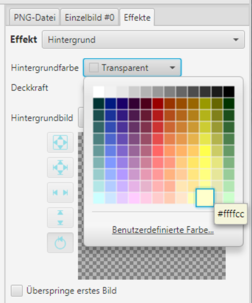
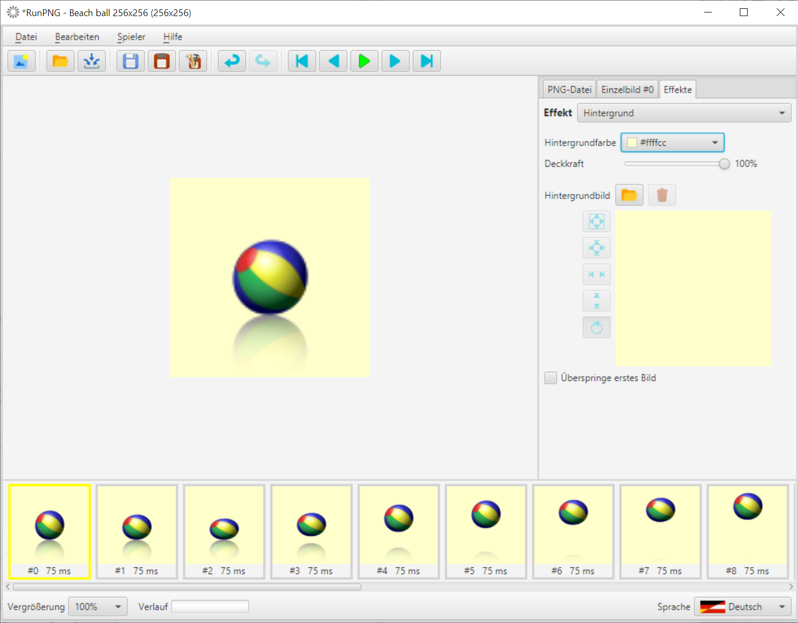
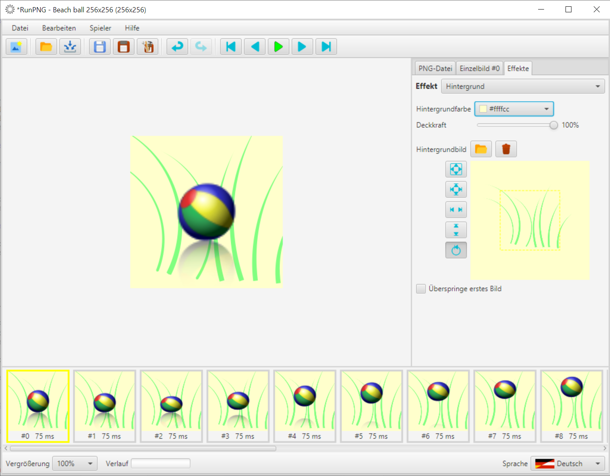
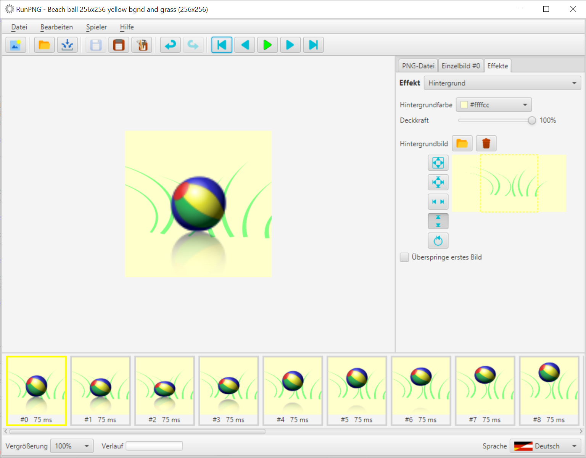

Hintergrund
Eine Hintergrundfarbe oder ein Hintergrundbild ergeben nur dann einen Sinn wenn das Bildmaterial teilweise transparent, durchscheinend oder eventuell kleiner als die Applikationseinstellung ist. Zum Ausprobieren dieses Effektes laden wir uns zuerst einen animierten Strandball in den Arbeitsspeicher. Das Bild befindet sich unter RunPNG/doc/samples/various/Beach ball 256x256.png. Es ist eine APNG-Datei und besteht aus 20 Einzelbildern. Wir brauchen nichts weiter daran machen.
Dann wechseln wir zum Tabulator Effekte und wählen den Effekt Hintergrund aus. Fangen wir mit einer einfachen Hintergrundfarbe an. Dazu den Farbwähler anklicken und eine Farbe aussuchen, die zu einem Strandball passen könnte. Möglichst kein Grün, denn die Farbe kommt später noch hinzu.
Mit dem Deckkraft-Schieberegler ließe sich einstellen, wie durchsichtig der Hindergrund werden soll. 100% entspricht voll deckend, 0% ist völlig transparent. Dazwischen befinden sich die durchscheinenden Grade. Aber bleiben wir hier mal bei 100%.
Der ausgewählte Farbhintergrund wird sofort an die Einzelbilder übertragen. Man kann sehen, dass nicht nur die undurchsichtigen Teile des Balles über die Hintergrundfabe gelegt werden, sondern sich auch die durchscheinenden Farben über den neuen Hintergrund blenden.
Nun kommt noch ein Hintergrundbild hinzu. Es befindet sich unter RunPNG/doc/samples/various/Grass 1.png. Und man sieht, dass es zu groß ist. Es hat nämlich 512 x 512 Pixel.
Doch können wir die Skalierung benutzen. Und zwar stauchen wir das Hintergrundbild vertikal mit der Schaltfläche . Es macht übrigens nichts, wenn der Hintergrund links und rechts noch übersteht. Das wird von der Applikation beim Zusammenfügen der Bilder entfernt.